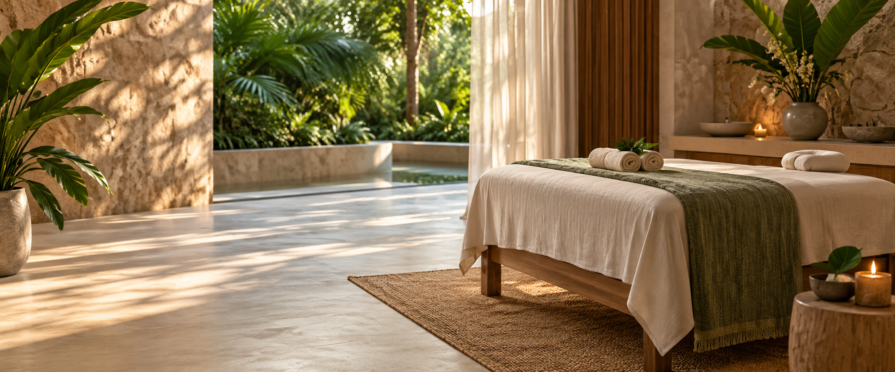

PAUSE · RESPIRE · RECOMECE
Um tempo inteiro
para você.
Rituais de bem-estar que respeitam seu corpo, seu ritmo e sua rotina.
CONHECER RITUAIS
O ESPAÇO
Bem-estar é presença.
Técnica cuidadosa, produtos naturais e uma escuta sem pressa.
ESCOLHA O SEU TEMPO
Rituais para
voltar ao eixo.
“Cuidar de si também é criar espaço para o que importa.”RESERVAR UM MOMENTO